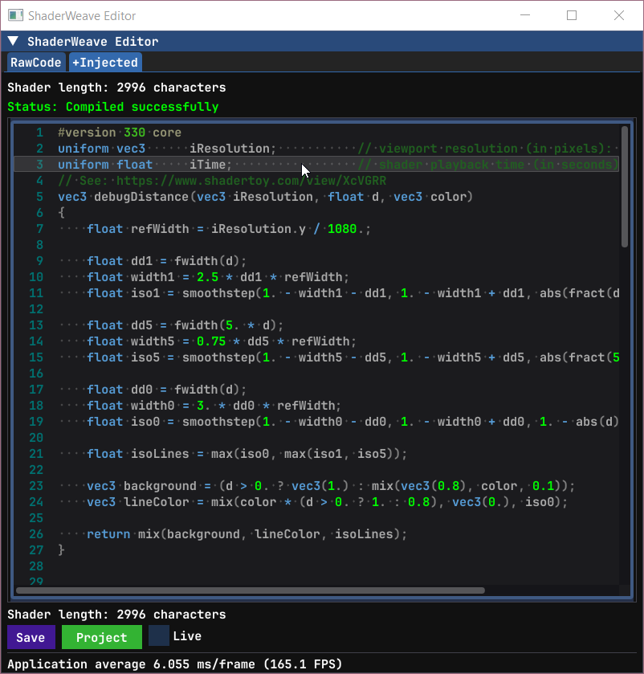
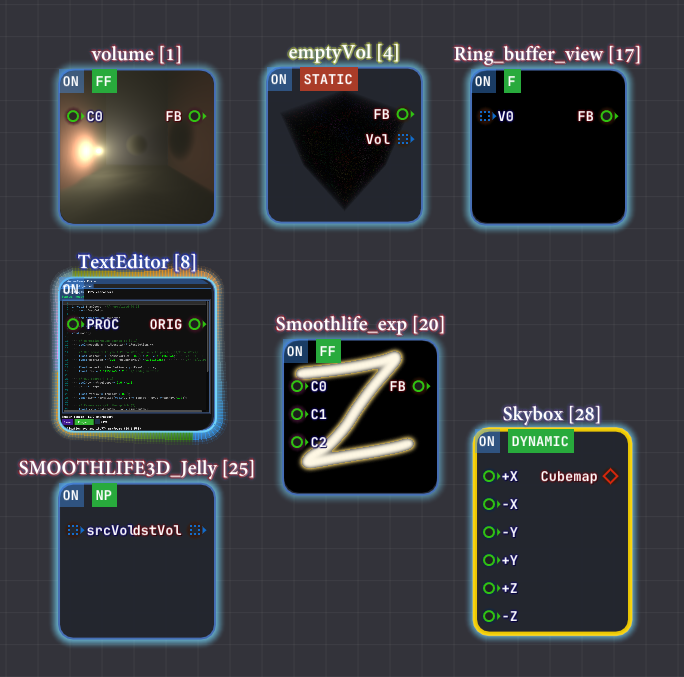

ShaderWeave C++
The Ultimate GPU Playground for Real-Time Graphics
An innovative, high-performance, node-based shader development environment for interactive GPU graphics. Built with C++ and ImGui for maximum performance and flexibility.
Beyond ShaderToy
Most shader playgrounds, including ShaderToy, revolve around a single fragment shader. ShaderWeave extends that model into a full visual dataflow graph: node-based workflows spanning fragment and compute shaders, automatic uniform and resource binding, and real-time hot-swapping of individual stages.
Instead of editing one monolithic shader, you assemble pipelines by connecting nodes. Each node has explicit, typed inputs and outputs, so complex networks stay understandable, debuggable, and easy to extend.
Complex Shader Networks in Action
Multiple shaders working together, with real-time preview of every intermediate result. The node-based interface makes it trivial to route outputs between shaders, creating complex effects that would be impractical in traditional shader editors.
Advanced Shader Composition
Build sophisticated rendering pipelines by combining multiple shader stages. Each node can output to multiple targets, and the system automatically handles type checking and connection validation.
Features
100% ShaderToy Compatible
Copy-paste ShaderToy code and watch it run instantly. The system automatically inspects your code, detects missing uniforms and declarations, then injects them seamlessly.
Everything is Hot-Swappable
Each shader node can expose its framebuffer, 3D volumes, or arbitrary compute buffers as typed outputs. ShaderWeave tracks these resources and keeps them live while you edit.
Swap individual nodes in a running pipeline, reroute skybox faces, or feed a node's output back into earlier stages to build feedback loops without restarting the graph.
Native Compute Shaders
Full compute shader support enables true 3D simulations, volumetric effects, and complex iterative algorithms—far beyond traditional 2D ping-pong buffers.
Build 3D cellular automata, time volumes, or any GPU compute application with the same visual workflow as fragment shaders.
Automatic Type Detection
The system scans your shader code and automatically determines inputs and outputs. Connections between matching socket types resolve automatically.
Drag-and-drop external files (images, HDR, models, volumes) directly into the graph. The default viewer is itself an editable shader.
Fully Hackable
All-in-one solution with integrated text editor, preview windows, and node view. Apply shader networks to UI elements or external windows.
Smart defaults (auto-enables ping-pong for feedback loops), but everything is overridable. Complete control when you need it.
Fully Visual
View every intermediate result simultaneously. Complex shaders become visual networks, making it easy to understand data flow and debug issues.
Export/import entire shader networks as reusable modules. Build a library of effects and compose them visually.
Seamless ShaderToy Integration
Direct ShaderToy Import
Copy the code from ShaderToy, paste into ShaderWeave, and watch it work immediately. Either pasting the file in the shader folder or pasting the content in the editor works.
In this demo, we first deleted the previous network we were working on, then we loaded a few shaders (each time you launch, it will scan the shader folder and make the shaders ready to use).
When you write your own code, you can choose to either use the ShaderToy-styled built-ins or not, and the system will do the rest automatically.
Automatic Code Injection
The editor has two views: the raw view shows the original code and the injected view shows the code after processing. The injection system handles all compatibility differences automatically, including texture samplers, uniform buffers, and built-in functions. It supported all the built-ins include: iResolution, iTime, iChannel, iMouse, and others.
As we know, ShaderToy buffer passes are not stand-alone GLSL programs. Besides the missing uniforms, we also synthesize the missing main() entry point and required bindings. ShaderWeave analyzes your shader code at runtime, detecting which ShaderToy uniforms and built-ins you're using. It then injects only what's needed.
The auto-injected code is now fully portable: all required built-ins are explicitly declared, so any environment only needs to supply the inputs.
📋 Original ShaderToy Code

✨ Auto-Injected in ShaderWeave
The system inspects your code for undefined variables, compares against ShaderToy's API, and injects necessary declarations. You get full ShaderToy compatibility without cluttering your workspace with default variables when working on custom shaders.
Fully Automatic Node Generation
How does ShaderWeave turn arbitrary code into a node? In many node-based systems you have to define node types manually, including metadata and registration, almost like writing a plugin. In ShaderWeave, any valid shader file becomes a node automatically. Input and output sockets are discovered via simple naming conventions in the main input/output variables, which the compiler metadata maps to concrete types. For compute shaders, the system also interprets GLSL qualifiers (readonly, writeonly, image2D, etc.) to infer whether a socket is an input, output, or bidirectional.
📋 Different types of sockets
All of the boilerplate is handled automatically by the system.
Hot-Swappable Architecture
In ShaderWeave, all resources are exposed as typed sockets: framebuffers, textures, skybox faces, compute volumes, and more. They can be connected, disconnected, and rerouted in real-time without breaking your workflow. This workflow is far more flexible than traditional shader editors.
Real-Time Shader Swapping
Replace any shader in a running pipeline without restarting. Connect outputs to different inputs, swap entire processing chains, experiment freely—the system stays live throughout. In this example, we can see how the shader we replaced affects the participating media directly.
Dynamic Routing
Route any output to any compatible input. Mix and match effects, combine multiple shader outputs, or feed results back as new inputs. The graph updates instantly with every connection change.
Skybox Face Hot-Swapping
This example demonstrates hot-swapping individual skybox faces. This output can also be connected back to form a feedback loop.
Compute Shader & Feedback Loops
ShaderToy supports ping-pong buffers for 2D iterative simulations. ShaderWeave takes this to the next level: Besides ping-pong buffer for each fragment shader, ShaderWeave also fully supports compute shader, allowing 2-way sockets and arbitrary feedback mechanics.
This enables 3D cellular automata, volumetric simulations, and complex multi-stage recursive effects that extend the classic 2D ping-pong model.
Classic 2D Feedback: SmoothLife
Traditional 2D automata like SmoothLife work perfectly with ping-pong buffers. Each frame reads from the previous state and writes to the next, creating continuous evolution over time.
What Happens Without Ping-Pong?
This example shows what goes wrong when ping-pong is disabled on a feedback loop (IO conflict). The system auto-detects when ping-pong is needed, but the system also allows manually overriding this for rare cases in which this shader behavior is needed.
Compute Shader: beyond Ping-Pong buffer
Compute shaders enable feedback loops with arbitrary data structures. Not limited to 2D textures—use 3D volumes, structured buffers, or any GPU-writable resource. The feedback circuit can be a general directed graph of computation, where nodes can read and write arbitrary buffers across iterations. See a simple example in action:
Time Volumes: 3D Feedback
One application is building a volumetric history by accumulating results across time in a 3D texture. Each frame becomes a slice in a 3D volume, creating temporal structures that can then be passed to another node for display (e.g. a raymarching node in this example). In ShaderWeave, this is trivial to implement.
Accumulation Buffers
Another example of a feedback loop in action.
CUDA JIT Integration
CUDA programs work as first-class nodes in the shader pipeline. They read inputs, perform compute work, and write outputs—just like any other node. Since shader nodes expose their data as textures, CUDA integration uses CUDA surface data mapping to seamlessly bridge between the two worlds.
CUDA nodes also have access to all the standard built-ins: time, mouse, keyboard, and more. This makes exploration incredibly convenient—setting up an environment that allows experimentation is often a much harder problem than using the technique itself. ShaderWeave handles that complexity for you.
An example of a simple CUDA node: a CUDA program that implements 2D Smoothlife.
Just Another Node
CUDA kernels appear as regular nodes in the graph. Connect texture inputs, wire up outputs, and the system handles all the interop automatically.
Full Built-in Support
All the convenience built-ins (iTime, iMouse, iResolution, etc.) are available in CUDA code too. Start experimenting immediately without boilerplate setup.
OptiX Ray Tracing Support
OptiX programs can also be used as nodes in the pipeline. They can serve as a starting node where OptiX renders a scene, or as a processing stage in the middle of a pipeline (requires extra work to set up).
Since OptiX recompilation is slow, live editing mode is disabled for these nodes. Overall, OptiX nodes are more heavyweight and play a different role compared to CUDA and shader nodes—they're designed for complex ray tracing workloads rather than rapid iteration.
An example of a complex OptiX node: The node contains a Wave-level realtime path tracer with a reference plane wave, producing visible interference fringes.
OptiX as Initial Node
Let OptiX load a scene and run advanced algorithms, creating renders as the initial input. Can produce multiple outputs like different sensing modes, image + depth, etc., which are then fed into shader pipelines for post-processing.
OptiX as Processing Stage
OptiX can also be used as a processing stage rather than a rendering backend. RTX hardware naturally operates on complex spatial scene representations through ray traversal, making it well-suited for spatial computation that would be difficult to express in shader-based pipelines. This parallels early programmable GPU pipelines, where general computation had to be reframed as rendering primitives to access GPU acceleration.
Intuitive Node-Based Interface
Every shader is a node. ShaderWeave automatically scans your code to determine inputs and outputs, then creates type-safe sockets. Connect compatible sockets to build shader pipelines visually—no manual configuration required.
Clean and intuitive node graph with automatic input/output detection and type-safe connections.

Rich variety of node types: fragment shaders, compute shaders, textures, models, volumes—all unified in one interface. The built-in viewer and the node editor are both themselves nodes.
Drag-and-Drop Everything
External assets—images, HDR maps, 3D models, volumetric data—can be added by simply dragging them into the graph. They become nodes instantly, ready to connect.
Complex Routing Made Simple
Connect outputs from one shader to inputs of another. The graph automatically handles execution order, dependency resolution (a simple dependency analysis and topological sorting is performed in the backend), and resource synchronization. Focus on creativity, not plumbing.
A Hackable All-In-One Environment
ShaderWeave is an all-in-one solution with integrated code editor, preview windows, and node view—all synchronized in real-time. But it goes further: you can apply shader networks to the UI itself, external windows, and (in development) other applications.
An example showing the main window displaying the text editor after attaching a stylization shader. This is only part of the network—notice the multiple disjoint components working in parallel, demonstrating the highly modular architecture.
The full UI in action: the network has multiple independent components that can be easily connected or disconnected. This modularity allows for flexible experimentation and rapid prototyping.
Integrated Code Editor
Full-featured text editor with syntax highlighting, auto-completion, and live error feedback. Edit shader code and see results instantly with no external tools required. The editor itself is part of the hackable UI.
Using the editor as a node
The editor node exposes its own framebuffer, allowing you to sample it and treat it like any other texture. In this demo, we can see the text editor projected onto the blocks.
Apply the Shader Network to a Window
Entire shader networks can be applied back to windows and UI elements (editor, node editor, etc), opening up patterns like live UI stylization, interactive debug overlays, and shader-driven editor skins.
In this demo, we can see we first applied accumulation buffer effect to the text editor, then we switched to some other shaders to see them taking effect immediately.
Everything is Visual
Traditional shader editors show you the final result. ShaderWeave shows you every single step: intermediate buffers, debug outputs, node states—all visualized simultaneously. This makes it straightforward to understand and debug complex pipelines, and it also doubles as a powerful teaching and documentation tool.
Complex Networks Visualized
Watch data flow through complex shader pipelines. Every connection, every transformation, every intermediate result is visible. Debug issues by inspecting any stage in isolation or observing the whole pipeline at once.
Seamless Workflow
Typical Session
1. Launch & Scan:
ShaderWeave scans your shader folder and lists all usable shaders.
Your library is immediately available—no manual importing.
2. Add & Connect:
Drag shaders into the workspace, connect their sockets. The system
validates types and handles execution order automatically.
3. Edit & Iterate:
Live edit shader code and watch results update in real-time. Modify
connections, swap nodes, experiment freely—everything stays hot.
4. Discover & Reuse:
Intermediate results from one network often become useful inputs for others.
Route outputs between networks to build effects you might not have designed explicitly from the start.
5. Export & Share:
Save entire shader networks as modules. Import them in future projects.
Build a personal library of reusable effects.
A shader workflow designed to be visual, intuitive, and explorative.
Technology Stack
Built for Performance
ShaderWeave is implemented in C++ for maximum performance and low-level control. This enables features that would be difficult or impossible in higher-level languages: native compute shader support, direct GPU resource management, and minimal overhead in the hot path.
The UI is built with Dear ImGui—a powerful immediate-mode GUI library that's highly customizable. While many ImGui applications stick to simple debug-style interfaces, ShaderWeave uses custom rendering and layout to build a complex, polished UI that would traditionally require a retained-mode framework.
Why C++ & ImGui?
- Performance: Direct GPU access with minimal abstraction overhead. Critical for real-time shader development.
- Compute Shader, CUDA, & Optix Support: Native GPU compute requires low-level control. C++ provides direct access to OpenGL, CUDA, and Optix APIs.
- ImGui Flexibility: Immediate-mode paradigm makes complex, dynamic UIs straightforward. Full customization of visual effects and dynamic layout: perfect for specialized tools.
- Platform Integration: Direct OS APIs for window management, file system access, and future inter-app communication features.